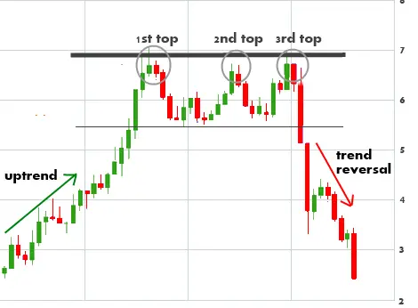

ট্রিপল টপ প্যাটার্ন হল একটি রিভার্সাল চার্ট প্যাটার্ন যা তিনটি অনুরূপ উচ্চতার
গঠন দ্বারা চিহ্নিত করা হয়, যা একটি সমর্থন স্তর দ্বারা সংযুক্ত থাকে। তৃতীয় শীর্ষটি
প্রথম এবং দ্বিতীয় শীর্ষের চেয়ে কম হওয়া উচিত।
ট্রিপল টপ প্যাটার্নটি একটি সন্তাব্য পতনের ইঙ্গিত দেয় এবং ট্রেডাররা প্রায়শই
এটিকে ট্রেডিংয়ের সুযোগ হিসাবে ব্যবহার করেন। প্যাটার্নটিতে প্রবেশ করার জন্য,
ট্রেডাররা প্রায়শই তৃতীয় শীর্ষের নিচে একটি 'ব্রেকওয়ে' সন্ধান করেন।
ট্রিপল টপ প্যাটার্নটি একটি নির্ভরযোগ্য রিভার্সাল প্যাটার্ন নয়, তবে এটি একটি
সম্ভাব্য পতনের ইঙ্গিত দেয় এবং ট্রেডাররা প্রায়শই এটিকে ট্রেডিংয়ের সুযোগ
ব্যবহার করেন।
